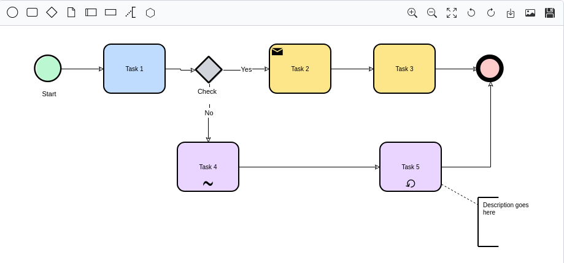

bpmn-editor¶
A BPMN diagram editor you can drop into any page — agnostic of UI framework and backend, built on @maxgraph/core.



What this is (and isn't)¶
@sourcentis/bpmn-editor doesn't assume React/Vue/Angular, and it doesn't
assume a server. But it is not dependency-free: it's built on
@maxgraph/core, its rendering engine, installed alongside it as a peer
dependency.
- Not swappable —
@maxgraph/coredoes all the actual drawing. The editor is built on it, the same way a chart library is "built on" Canvas. - Swappable (and optional) — everything backend-shaped (loading a
catalogue of objects to link to, saving to a server) is expressed as
small, optional TypeScript interfaces ("ports") that you implement.
Provide none of them and the editor still works fully standalone: draw,
import a
.bpmn/XML file, export it back out.
Features¶
- Full BPMN-ish drawing surface: tasks, states/events, gateways, data objects/stores, lanes, activities groups, annotations, conversations, sequence/message/conditional/default flows — drag-and-drop from a palette, connect, recolor, rotate, undo/redo.
- Import / export
.bpmn/XML files — works with zero backend. - Export to SVG, with the BPMN icon font embedded so the file renders correctly outside the browser.
- Read-only "viewer" mode (
readOnly: true): disables editing, keeps pan/zoom, and turns clicks on linked elements into anavigateevent. - Two integration levels: a batteries-included default toolbar
(
ui: 'default'), or canvas-only (ui: 'none') so a host application can drive everything through the instance API with its own UI. - Optional backend ports — see the backend integration guide.
- i18n-ready — every user-facing string is overridable, see the i18n guide.
- Self-contained: the BPMN icon font and every toolbar/menu icon are
bundled and inlined at build time — no extra
<link>, no separate CSS. - Multi-instance safe: mount as many editors as you want on one page.
- CSP-safe — see Security / CSP.
Installation¶
npm install @sourcentis/bpmn-editor @maxgraph/core
@maxgraph/core is a peer dependency — install it explicitly alongside the
editor.
Quick start¶
<div id="editor" style="height: 640px;"></div>
<script type="module">
import { createBpmnEditor } from '@sourcentis/bpmn-editor';
const editor = createBpmnEditor(document.getElementById('editor'), {
ui: 'default',
});
</script>
That's it — a complete BPMN editor with a toolbar, drag-and-drop palette, undo/redo, and import/export, with no server and no other setup.
Live examples¶
Both examples below run entirely client-side, loaded from the published npm
package via a CDN — the same code as
examples/editor.html
and
examples/viewer.html
in the repository.
Editor (ui: 'default')¶
Full toolbar, drag-and-drop palette, undo/redo, import/export — everything
enabled. No provider and no persistence configured, so Save
downloads a local .bpmn file. Try dragging a shape from the palette, or
use Import/Export in the toolbar.
Viewer (ui: 'none' + readOnly: true)¶
Canvas only, no toolbar, no editing — pan and mouse-wheel zoom still work. This is the read-only mode used to embed a diagram for browsing rather than editing.
Ports (optional backend integration)¶
Two small interfaces let the editor talk to a backend without knowing anything about it — both entirely optional, and covered in detail in the backend integration guide:
BpmnObjectProvider— powers the "insert cartography object" search inside the contextual menu. Without it, that action is simply hidden.BpmnPersistence— powers theui: 'default'toolbar's "Save" action. Without it, "Save" downloads a local.bpmnfile instead.
Instance API¶
const editor = createBpmnEditor(container, options);
| Method | Description |
|---|---|
loadXml(xml) |
Replaces the current graph with the given editor-format XML. |
getXml() |
Serializes the current graph. |
importBpmnXml(xml) |
Replaces the graph by parsing standard BPMN 2.0 XML. |
setEnabled(enabled) |
Toggles editing on/off at runtime. |
exportSvg(filename?) |
Exports to SVG and triggers a download. |
zoomIn() / zoomOut() / fit() |
Viewport controls. |
on(event, handler) / off(event, handler) |
Subscribe/unsubscribe. |
destroy() |
Tears down the instance and removes every listener it added. |
See the API reference for the full options list, event payloads, and message keys.
Next steps¶
- Vanilla JS / HTML guide — no backend, no build step
- Backend integration guide — implement the
provider/persistenceports against a real API, with a full worked example (Mercator) - i18n guide — translate every user-facing string
- Assets guide — what's bundled and how to override the export font
- API reference — full options, events, and types
- Security / CSP